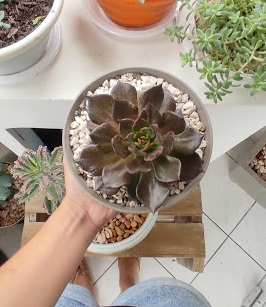
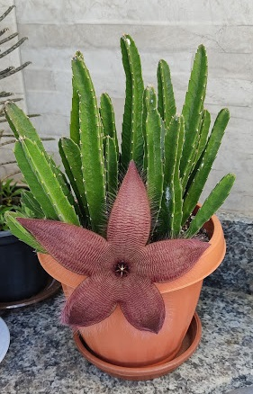
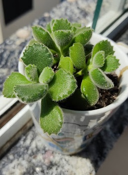
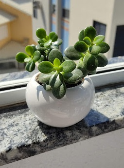

Aqui você encontra algumas das gorduchinhas que fazem parte da minha coleção.
Espero que gostem!
A Black Prince é uma das echeverias mais encantadoras, tem um charme misterioso variando a cor das folhas, que pode ir do verde até um roxo bastante escuro, quase preto. É relativamente fácil de reconhecer, com as folhas pontudas e sua cor característica, geralmente do centro para fora.
Necessita de muita luz e só conseguem sobreviver dentro de casa, se mantidas ao lado de janelas com boa entrada de sol. A quantidade de luz é decisiva na tonalidade desta suculenta, quanto mais sol receber mais escura fica. Quanto à temperatura, é bastante resistente, suporta o calor intenso e sobrevive ás baixas temperaturas do Inverno.
Stapelia hirsuta, nome vulgar flor da estrela do mar ou planta carniça, é uma espécie de planta pertencente à família Apocynaceae
As flores de Stapelia hirsuta são planas, muito peludas, vermelho-escuras e lembram carne podre. O Corolla pode atingir uma largura de cerca de 5–15 centímetros (2,0–5,9 pol.). O cheiro de carniça serve para atrair vários polinizadores, principalmente moscas. O período de floração estende-se do final do verão ao final do outono.
Cotyledon tomentosa é uma espécie de planta da família Crassulaceae, nativa da África do Sul. É um arbusto sempre-verde suculento, com grandes folhas verdes difusas e ovadas. Sua subespécie autônoma é conhecida como pata do urso por causa dos "dentes" proeminentes nas pontas de suas folhas.
Essa espécie não alcança grandes alturas como algumas suculentas, mas se bem cuidada, podem chegar até a 30 centímetros!
Crassula ovata é uma espécie de planta com flor pertencente à família Crassulaceae.
Uma das principais características desta espécie é a sua capacidade de adaptar-se ao sol direto ou à meia-sombra, ou seja, ela pode ser usada em jardins, quintais e varandas ou até em espaços internos bem iluminados. Como ela é capaz de armazenar água e é bem resistente, precisa de pouca rega e de pouca adubação.
